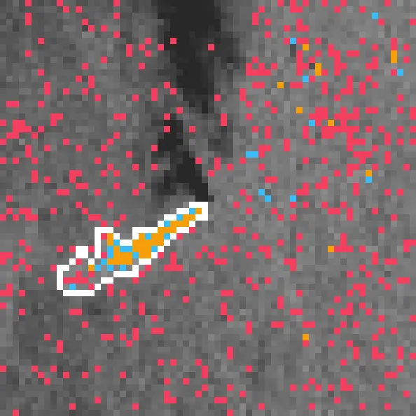
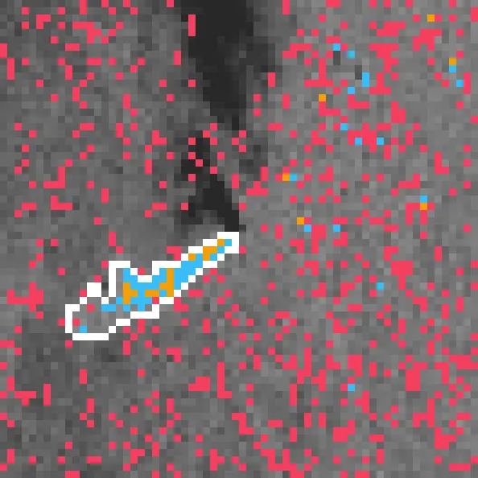
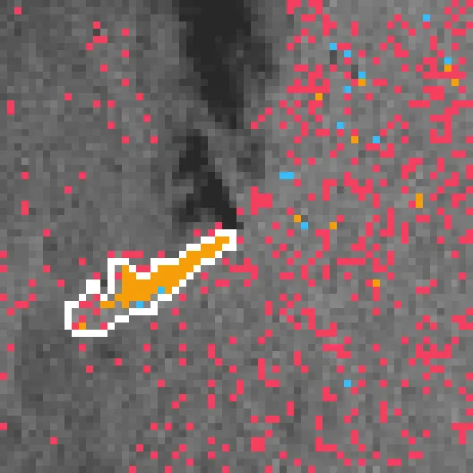
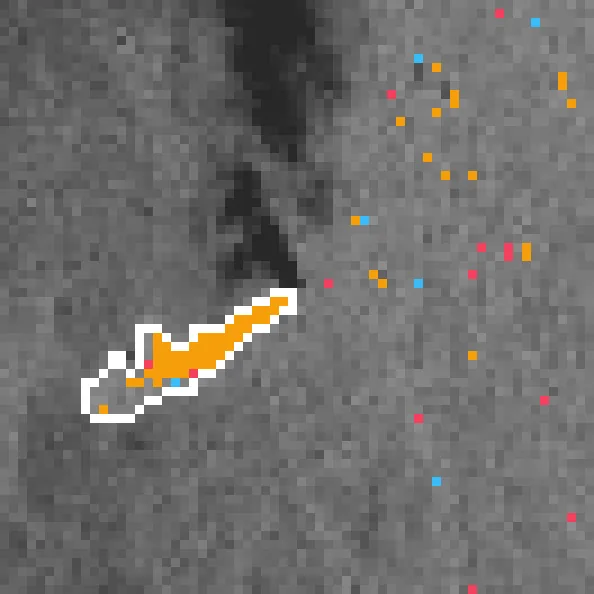
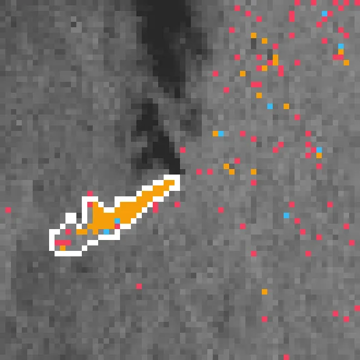
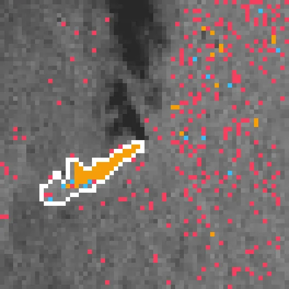
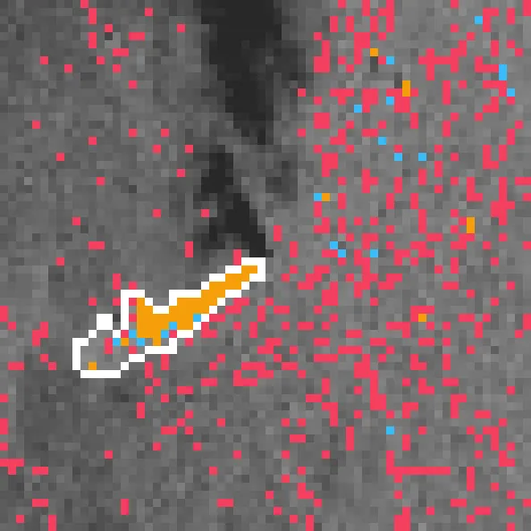
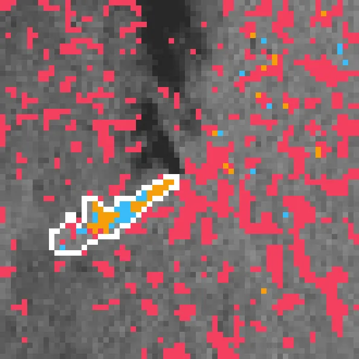

Benchmark / Use cases / Methane plumes / Results / methane-l89-07
methane-l89-07

The original detection in orange over the enhancement, with the plume mask in white.
Sample
| sensor | Landsat 8/9 |
|---|---|
| methaneset_id | 8feb1956-b9f7-4bad-9e2b-aa51dc755801 |
| pixel_m | 30 |
| shape | 2x66x66 |
| dtype | uint16 |
| plume_pixels | 141 |
Compression ratio and delta_iou
Each point is a bound on the root-mean-square error, written next to it in 10⁻⁴ of reflectance, on this sample.
GeoZL PIVCOGeoZL PFORJPEG XL
Decoded detections
The result on the compressed copy at each error bound, in 10⁻⁴ of reflectance.detected on bothlostnew
GeoZL PIVCO
2.3× · delta_iou -0.007

2.7× · delta_iou -0.022

3.3× · delta_iou -0.026

4.2× · delta_iou -0.114

5.7× · delta_iou -0.274

8.0× · delta_iou -0.309

11.7× · delta_iou -0.365
GeoZL PFOR

2.1× · delta_iou -0.007
2.4× · delta_iou -0.022
2.9× · delta_iou -0.026
3.5× · delta_iou -0.114

4.4× · delta_iou -0.274

5.5× · delta_iou -0.309

6.9× · delta_iou -0.365
JPEG XL
1.5× · delta_iou +0.000

1.5× · delta_iou +0.000

1.8× · delta_iou -0.014

3.0× · delta_iou -0.099

3.9× · delta_iou -0.230

6.2× · delta_iou -0.287

16.2× · delta_iou -0.346